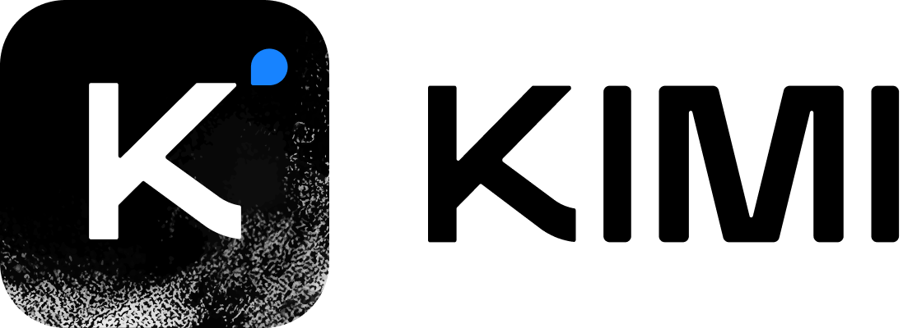

Moonshot-v1
原始资料不足，当前达不到完整技术精读标准
Moonshot AI 没有为 moonshot-v1 发布可核验的独立 Tech Report、Hugging Face model card、权重或系统性架构说明。 现存官方一手材料主要是 2025 年回顾性产品博客与开放平台说明，只能确认发布时间、context SKU、API 定位和产品策略；无法可靠回答参数量、训练数据、网络结构、训练 recipe 或独立 benchmark。因此本页明确达不到 GLM-5.3-Flash 那种技术细节密度，不用推测补齐空白。

先澄清发布时间
atlas 将该阶段放在 2023-10，对应 Kimi 智能助手的早期发布；而官方回顾明确写到：moonshot-v1 系列在 2024-01-31 随 Kimi 开放平台公测推出。这两个时间指向不同事件：
| 时间 | 事件 | 应怎样记 |
|---|---|---|
| 2023-10 | Kimi 产品进入公众视野 | 产品谱系起点 |
| 2024-01-31 | moonshot-v1 API family 上线 | 可核验的模型/API 发布节点 |
| 2025-02-17 | 官方博客回顾并解释 kimi-latest | 主要一手资料来源 |
因此标题沿用 atlas 的早期阶段，但正文不把 2023-10 错写成 moonshot-v1 API 的确定发布日期。
能确认的产品规格
| 项目 | 官方可确认信息 |
|---|---|
| Family | moonshot-v1-8k / moonshot-v1-32k / moonshot-v1-128k |
| 最大 context | 128K |
| 服务定位 | 稳定、面向开发者与企业 API |
| 典型任务 | 文本生成、意图识别、结构化抽取、JSON output |
| 后续能力 | ToolCalls、JSON Mode、Partial Mode、联网搜索（官方称与 kimi-latest 共用部分能力） |
| 权重 | 未开放 |
| 参数与架构 | 未披露 |
| 技术报告 | 未发布 |
最有价值的判断：产品模型与 API 模型开始分流
官方后来解释，Kimi 智能助手与开放平台对模型有不同目标：
- 助手产品追求更好的聊天体验、情绪价值和快速试验；
- API 用户更看重稳定、结构化输出和 prompt compatibility；
- 把试验性能力立刻合入 API 会造成 breaking changes；
- 因而
moonshot-v1保持相对稳定，kimi-latest跟随在线助手快速更新。
这其实是早期 Kimi 路线中很重要的工程判断：“最新”与“可依赖”不是同一个模型版本目标。 对 agent 系统尤其如此，tool schema、JSON 格式和 prompt 行为一旦漂移，会直接破坏下游工作流。
128K 的意义与不能证明的部分
在当时产品环境里，128K 支持长文档阅读、跨段检索和长对话，是 Moonshot 的鲜明标签。但官方公开资料不足以判断：
- 使用了哪一种 attention / position encoding；
- 128K 是预训练、继续预训练还是仅推理扩窗；
- 长 context 下的有效利用率和 needle / multi-hop 表现；
- 输入长度增长后的吞吐、显存与质量曲线；
- 8K / 32K / 128K 是否同一权重或不同 checkpoint。
因此不能从“支持 128K”推导出“在 128K 上稳定推理”，也不能把后续 K2/K3 的 MLA/KDA 架构倒推到 moonshot-v1。
从后续谱系回看它的位置
| 阶段 | 核心问题 |
|---|---|
| Moonshot-v1 | 把长 context 作为可用 API 能力 |
| Kimi k1.5 | 把长 context 变成 RL reasoning 的 scaling 轴 |
| Kimi K2 | 用大规模 MoE + agentic data / RL 构建开放 agent 模型 |
| K2.5 / K2.6 | 原生多模态、Agent Swarm、coding 与主动执行 |
| Kimi K3 | KDA + AttnRes + Stable LatentMoE，把训练 context 推到 1M |
Moonshot-v1 的作用不是提供后续架构蓝图，而是确立“长上下文是 Kimi 品牌和产品入口”的路线。
对 Agent 产品与训练的启发
一手资料
- 官方回顾：为什么要推出 Kimi Latest 模型？
- 本地索引：
src/Official Source.md
资料缺口清单
- 参数量、层数、attention / MoE 架构；
- 预训练 token、数据组成与 context extension 方法；
- 原始 benchmark、评测协议与消融；
- 可归档的官方 model card / Tech Report。
如果官方未来补发历史技术资料，应重写本页对应章节；在此之前，以上缺口必须保留，不能用二手猜测填充。